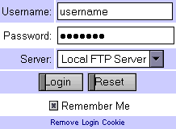
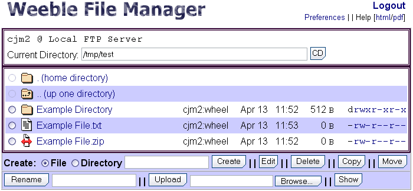

Extract the weeblefm tar archive to a folder that is accessible to your web server. For example:
cd /usr/local/www/data/ tar -zxvf /path/to/weeblefm-1.1.tar.gz
This will create a folder called "weeblefm" where the files are stored, you may rename this if you choose to. Using the above example, the files would be located in:
/usr/local/www/data/weeblefm/
To configure the Weeble File Manager, open the settings.php file in your favorite editor.
For a quick setup, all of the options are documented in that file. More detailed descriptions of what the options are, and their possible settings, can be found later on in this documentation.
The only setting that you must set before WeebleFM will work is the $ftp_Servers variable.
Once settings.php has been edited to your liking, simply open your web browser and point it to where ever WeebleFM resides on your server. In the above example, we would direct our browser to http://www.webserver.dom/weeblefm/
WeebleFM is a web-based file manager based on php4 and ftp. Our intention is to create an OS independent file manager. While based upon FTP, WeebleFM is not limited to ftp, and we are working to create a full feature file manager.
See the Installation section at the top of this document.
|  |
| Login Window |
|  |
| File Manager Window |
|
|
| Editor Window |
Clicking any of the directory links will change to that directory. Clicking the radio button to the left will select that directory for one of the functions listed at the bottom.
Listed here is the following:
Clicking any of the files will download that file (See Downloading). Clicking the radio button to the left will select that file for one of the functions listed at the bottom.
Click Help to bring up this page.
Clicking this link will take you back to your home directory.
Displays the username and the server name that the user logged in to.
Click Logout to log out of the file manager.
Clicking this link will change to the parent of the current directory.
To login to WeebleFM, type your username and password.
Next you choose the server you wish to login to by selecting it from the Server dropdown list.
Once your username and password are filled in, and the server is selected, click Login to log into the server.
Check this box to have WeebleFM save your username and password in a browser cookie. The next time you return to the login scree, the username and password will already be filled in.
If you no longer want your username and password saved (as a cookie), click this link.
There are two ways to change directories in WeebleFM. The first is to type a path into the "Current Directory" section at the top and click the CD button.
The second is to click on a directory name in the main file listing. There are two special "directory" entries that are always displayed at the top of the file listing. Those are the ". (home directory)" and ".. (up one directory)".
Both new files and directories are easy to create. Simply select whether you want to create a File or Directory, type in the name, and click Create.
When creating a new directory it will be placed in the current working directory.
When creating a new file, you will be taken immediately into the editor. You must click Save for the new file to be created. See the section on Editing Files for more information on how to use the editor.
WeebleFM has a built in text editor. To edit a file, choose one of the files in the current directory, by clicking the radio button to the left of it's name, and click the Edit button.
The layout of the editor window is very similar to the directory listing:
Please note: The editor will be unable to save a file once the session has expired. If you have problems with loosing your changes, either save the files more frequently, or have the system administrator increase session.cache_expire in php.ini.
To delete a file or directory, select the file or directory by clicking the radio button to it's left and click the Delete button. Directories can only be deleted if they are empty.
Only files can be copied. To copy a file, select the file by clicking the radio button to it's left and click Copy. Next select the folder to copy the file to and click Commit. You can select any directory you have access to save a file to.
If the file name already exists in the destination folder, the words "Copy of" will be append to the beginning of the name.
Both files and directories can be moved. Select the file or directory by clicking the radio button to it's left and click Move. Next select the folder to move to and click Commit.
Both files and directories can be renamed. Select the file or directory by clicking the radio button to it's left, type in a new name at the bottom next to the Rename button, and then click the Rename button.
To upload a file click the Browse... button at the bottom, select a file, and then click the Upload button.
To upload multiple files at one time, click the Upload button without 1st selecting a file. This will take you to the Upload page. Here you can select multiple files to upload at one time.
To download a file simply click on the filename.
The Show/Hide buttons toggle the display of hidden files. Click Show to display hidden files. Click Hide to hide them.
On systems that support the CHMOD command, the individual file permissions can be changed. The permissions are displayed to the far right of each file or directory. Below is an example of the permissions on a directory:
drwxr-xr-x
Click on the permission you wish to change to toggle it. For more information on how file permissions work, see the permissions entry in the Glossary.
The Preferences window allows you to customize Weeble File Manager, if the system administrator has enabled this feature. (See $allow_custom in Configuration Options.)
The available configuration options are grouped into 3 categories:
A number of preset themes are available with Weeble File Manager that change its look (colors, fonts, font sizes, etc...). Select a theme from the list and click Load Theme to see what it looks like.
Click Save to keep this theme, or click Cancel to discard your changes.
Note: Once a theme is loaded, it'll stay active even if Cancel is clicked. Logging out and back in will restore the user's previous settings.
The Display preferences are very similar to the themes. Here you can customize the colors, background image(s), fonts, and font sizes to you own liking. The display preferences are broken down again, into 3 categories.
Click Preview to view your changes, Save to keep them, or Cancel to discard.
Miscellaneous preferences are any settings that don't fit in the other two categories. Currently they consist of:
Starting Directory
Set this to the directory (folder) WeebleFM should start in, when logging in.
If this is blank, the default is to log into your home directory.
Hidden Files
Controls whether to initially display hidden files when logging in.
Edit Box
Controls the height (in rows) and width (in columns) of the edit window, and
the size (in either pixels or a percentage) of the preview window.
All of WeebleFM's configuration options can be found in the settings.php file. In this section we'll list each configuration variable, what it's purpose is, and what the available settings are.
Setting this to TRUE will allow the user to change file permissions (if supported by the server).
Setting this to TRUE will allow the user to override the default preferences.
Default setting for the display of hidden files and directories.
Default theme for the file manager. Set this to the name of the theme in the "themes/" directory you want to be the default (without the .thm extension).
This effects the theme used on the login page, and the theme chosen for new
users who do not yet have one set. If $allow_custom = FALSE, this will be the
theme used for all users.
Settings used by the file editor.
This sets the default access to WeebleFM. When a remote client is not covered by any of the entries in $ftp_access_list, this variable determines whether they are allowed access.
Set to TRUE to allow access by default, FALSE to deny.
Access list to allow or deny access to WeebleFM. Syntax is as follows: [+,-]IP/MASK
Note: Some versions of php4 choke on "255.255.255.255", in those cases please use "/32" instead.
| +,- | + allows access, - denies access. |
| IP | The IP can be specified in dotted-quad (xxx.xxx.xxx.xxx) notation or as a hostname (www.example.com). |
| Mask | The (subnet) mask can be specified in dotted-quad (xxx.xxx.xxx.xxx) notation or in /CERN (e.g. /24) notation. |
Set this to TRUE if you absolutely must disable the mcrypt encryption support. Setting this introduces security issues as anyone who has access to the web server can potentially read the stored passwords. The only time this should be set is when mcrypt is unavailable.
Set this to the maximum number of files a user can upload at one time, on the multiple-upload page.
Set this to TRUE if you want/need to use passive mode ftp connections to your server.
Set this to TRUE to enable the Remember Me checkbox, FALSE to disable.
Set this to the ftp server(s) you would like available to your users. The format is "Descriptive Name" => "server:port". The descriptive name is what will be listed on the Login screen, Server is the hostname or ip address of the ftp server, and Port is the port the ftp server is listening on. If the port is not specified the default of 21 will be used.
Icons used for different file types, set by file extension. The default settings are:
Key used for the encryption in WeebleFM (passwords, etc...). This should be unique to your site. Also, if this changes, the username/password cookies will need to be re-saved.
Note: The key should be enclosed in single (') not double (") quotes.
Set this up to configure logging.
Note: If file / directory where weeblefm is logging needs to be writable by the web server, otherwise logging will fail.
Set this to the location of the logo graphic displayed at the top of WeebleFM.
Set this to the location of the logo graphic displayed at the top of the login page.
This lists the preferred encryption algorithms provided by the mcrypt support, they are listed in order of preference. If the 1st option isn't available, it attempts to use the second. If none of the listed algorithms are available, the script will default to whatever is available.
This variable allows the admin to choose what columns to display in the file manager listing.
Color settings for the different levels of warning messages.
This product includes PHP, freely available from http://www.php.net/. For more information on the PHP license (v.2.02).
A huge thanks to SourceForge for hosting our project and making all of this possible.
See our project page at Source Forge for the latest troubleshooting information.
http://www.sourceforge.net/projects/weeblefm/
There are two settings in php.ini that must be configured to set the file size upload limitations. See the HelpDesk for more information.
The themes are loaded from files ending in .thm, in the themes/ directory. Two simple ways to create a theme are.
The PASV command requests that the remote server open a port for the data connection and return the address of that port. The remote server listens on that port and the client connects to it.
When using the more traditional PORT command, the client listens on a port
and sends that address to the remote server, who connects back to it. Passive
mode is useful when using ftp through a gateway router or host that controls
the directionality of traffic. (Note that though ftp servers are required
to support the PASV command by RFC 1123, some do not.)
Using the earlier example of drwxr-xr-x we have three sets of permissions.
drwxr-xr-x
- Owner permissions.
drwxr-xr-x
- Group permissions.
drwxr-xr-x
- World permissions.
For more information on subnetting try this Google Search.
Weeble File Manager
by Jon Manna & Chris Michaels
Updated Apr 24, 2002
{kind=link}